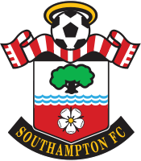
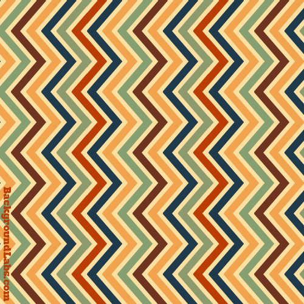

-
2 W : 1 D : 0 LChelsea7
-
2 W : 0 D : 0 L
 Liverpool6
Liverpool6 -
2 W : 0 D : 0 L
 Tottenham Hotspur6
Tottenham Hotspur6 -
1 W : 1 D : 0 L
 Manchester United4
Manchester United4 -
1 W : 1 D : 0 L
 West Ham United4
West Ham United4 -
1 W : 1 D : 0 LSouthampton4
-
1 W : 0 D : 1 L
 Manchester City3
Manchester City3 -
1 W : 0 D : 2 L
 Aston Villa3
Aston Villa3 -
1 W : 0 D : 1 LArsenal3
-
1 W : 0 D : 1 L
 Stoke City3
Stoke City3 -
1 W : 0 D : 1 L
 Cardiff City3
Cardiff City3 -
1 W : 0 D : 1 LFulham3
-
1 W : 0 D : 1 L
 Hull City3
Hull City3 -
0 W : 2 D : 0 LEverton2
-
0 W : 1 D : 1 L
 Norwich City1
Norwich City1 -
0 W : 1 D : 1 LSunderland1
-
0 W : 1 D : 1 L
 West Bromwich Albion1
West Bromwich Albion1 -
0 W : 1 D : 1 L
 Newcastle United1
Newcastle United1 -
0 W : 0 D : 2 L
 Crystal Palace0
Crystal Palace0 -
0 W : 0 D : 2 L
 Swansea City0
Swansea City0
